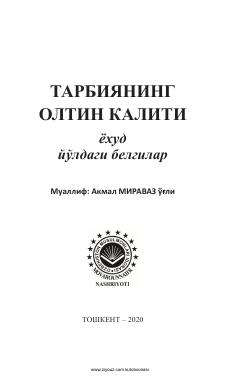

TOFarzand тарбияси ва оила қўрғонини мустаҳкамлашнинг маънавий-психологик асослари.
Ushbu risolada farzand tarbiyasining muhim психологик жиҳатlari, оила қўрғонини асрашнинг самарали усуллари ва инсон ўз фикрини ўзгартириш орқали бахтга эришиши мумкинлиги ҳақида сўз юритилади. Муаллиф жамиятда фарзанд тарбиясига беэътибор қара оқибатлари ва уни тўg'ri yo'naltirish yo'llarini diniy hamda hayotiy misollar yordamida tahlil qilgan.